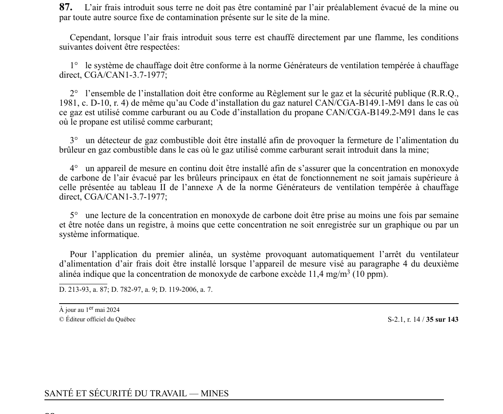

art-87-RSSM : air frais non contaminé chauffage
L'air frais envoyé sous terre doit rester propre ; le chauffage direct par flamme n'est toléré qu'à cinq conditions cumulatives.
- Aucune contamination admise, ni par l'air déjà évacué de la mine, ni par une autre source fixe de contamination présente sur le site.
- Chauffage direct par flamme : système conforme à la norme CGA/CAN1-3.7-1977 et installation conforme au Règlement sur le gaz et la sécurité publique, plus le code CAN/CGA-B149.1-M91 (gaz naturel) ou CAN/CGA-B149.2-M91 (propane).
- Détecteur de gaz combustible coupant l'alimentation du brûleur si le carburant gazeux risque d'entrer dans la mine.
- Mesure en continu du monoxyde de carbone évacué par les brûleurs principaux, plafonnée aux valeurs du tableau II de l'annexe A de la norme CGA/CAN1-3.7-1977.
- Lecture du CO consignée au registre au moins 1 fois par semaine, sauf enregistrement graphique ou informatique ; au-delà de 11,4 mg/m³ (10 ppm), arrêt automatique du ventilateur d'alimentation en air frais.
🌐 LegisQuébec · 📄 PDF officiel
Texte officiel
L’air frais introduit sous terre ne doit pas être contaminé par l’air préalablement évacué de la mine ou par toute autre source fixe de contamination présente sur le site de la mine.
Cependant, lorsque l’air frais introduit sous terre est chauffé directement par une flamme, les conditions suivantes doivent être respectées:
1° le système de chauffage doit être conforme à la norme Générateurs de ventilation tempérée à chauffage direct, CGA/CAN1-3.7-1977;
2° l’ensemble de l’installation doit être conforme au Règlement sur le gaz et la sécurité publique (R.R.Q., 1981, c. D-10, r. 4) de même qu’au Code d’installation du gaz naturel CAN/CGA-B149.1-M91 dans le cas où ce gaz est utilisé comme carburant ou au Code d’installation du propane CAN/CGA-B149.2-M91 dans le cas où le propane est utilisé comme carburant;
3° un détecteur de gaz combustible doit être installé afin de provoquer la fermeture de l’alimentation du brûleur en gaz combustible dans le cas où le gaz utilisé comme carburant serait introduit dans la mine;
4° un appareil de mesure en continu doit être installé afin de s’assurer que la concentration en monoxyde de carbone de l’air évacué par les brûleurs principaux en état de fonctionnement ne soit jamais supérieure à celle présentée au tableau II de l’annexe A de la norme Générateurs de ventilation tempérée à chauffage direct, CGA/CAN1-3.7-1977;
5° une lecture de la concentration en monoxyde de carbone doit être prise au moins une fois par semaine et être notée dans un registre, à moins que cette concentration ne soit enregistrée sur un graphique ou par un système informatique.
Pour l’application du premier alinéa, un système provoquant automatiquement l’arrêt du ventilateur d’alimentation d’air frais doit être installé lorsque l’appareil de mesure visé au paragraphe 4 du deuxième alinéa indique que la concentration de monoxyde de carbone excède 11,4 mg/m (10 ppm).
Texte de l’article 87 RSSM, extrait de la couche texte du PDF officiel (page 35), sans OCR ni retouche. La capture ci-dessous et le PDF font foi.
{kind=link}

Toucher l'image pour l'agrandir🔗 Voir art. 87 RSSM dans le PDF (page 35)
Version : texte officiel du RSSM (RLRQ c. S-2.1, r. 14), à jour au 1er mai 2024, Éditeur officiel du Québec
Voir aussi
- art. 85 : vérification air sauveteurs mine délaissée · obligation : avant de recommencer les travaux dans une mine souterraine délaissée ou une partie hors circuit de ventilation, des sauveteurs doivent vérifier la qualité de l'air selon les normes des articles 40 et 41 du RSST.
- art. 86 : ventilation mécanique obligatoire · obligation : la ventilation d'une mine souterraine doit être faite mécaniquement.
- art. 88 : air alimentation sans fumées combustion · interdiction : l'air alimentant une mine souterraine ne doit pas être contaminé par les fumées de combustion provenant de la cheminée de tout appareil.
- art. 89 : interdiction recirculation air ventilateur · interdiction : un ventilateur principal ou secondaire ne doit pas faire recirculer l'air pour ventiler un poste de travail souterrain ; la réutilisation de l'air est permise si la concentration de CO est mesurée à l'entrée de chaque circuit au moins une fois par semaine lors de marinage.
- ⚖️ Loi habilitante : LSST
- ↑ Index du bloc : Aménagement du chantier
Pages qui pointent ici (6)
- art-142-RSSM : équipements interdits dans le bâtiment d'orifice Recueil législatif
- art-85-RSSM : vérification air sauveteurs mine délaissée Recueil législatif
- art-86-RSSM : ventilation mécanique obligatoire Recueil législatif
- art-88-RSSM : air alimentation sans fumées combustion Recueil législatif
- art-89-RSSM : interdiction recirculation air ventilateur Recueil législatif
- RSSM : Aménagement du chantier (art. 12 à 99) Recueil législatif